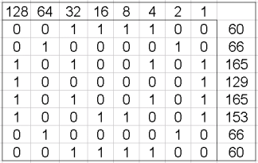

Het systeem dat we normaal gebruiken heet het decimale stelsel, maar computers gebruiken het binaire stelsel. Bij decimaal betekent 216: 6 x 10⁰ + 1 x 10¹ + 2 x 10². Je hebt dus een slot voor elke 10^n waar n een heel nummer is, maar die ook negatief kan zijn. Met negatieve getallen als n krijg je getallen achter de komma. Bij binair is het hetzelfde. Dus dan heb je bijvoorbeeld 1001,1. Dat is dan 1 x 2³ + 0 x 2² + 0 x 2¹ + 1 x 2⁰ + 1 x 2⁻¹. Dus in totaal is dat 1*2³ + 0*2² + 0*2¹ + 1*2⁰ + 1*2⁻¹= 8 + 0 + 0 + 1 + 0,5 = 9,5 in decimaal.
Een bit is een stukje informatie dat 1 of 0 is. De computer slaat alles op in bits. 8 bits is 1 byte. Een byte heeft een waarde van 0 tot 255.
Om te oefenen met decimaal omrekenen naar binair kan je de website waarvan de link hiernaast staat gebruiken die ene website.
Hieronder heb je nog een link naar een uitleg video hoe je moet omrekenen hier is de video.
